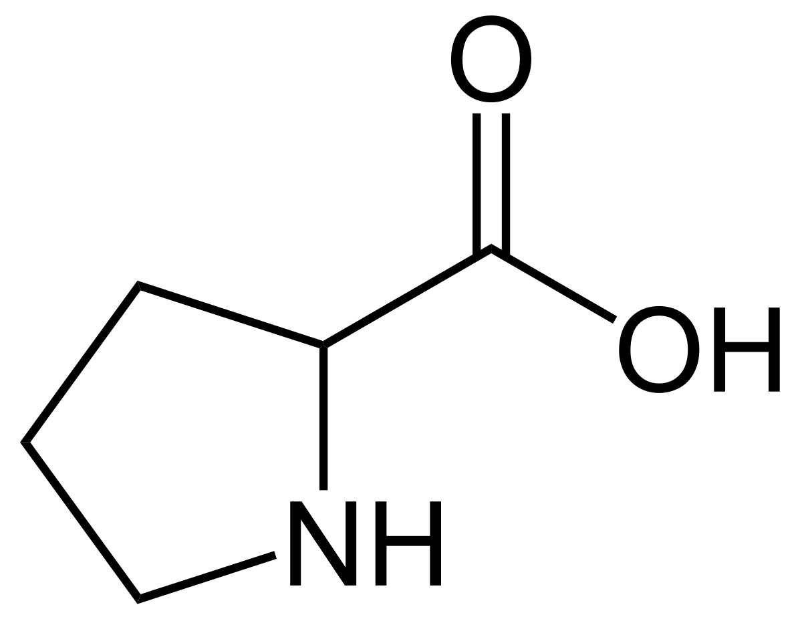

La prolina (Pro, P) o prolalina es uno de los aminoácidos que forman las proteínas de los seres vivos. En el ARN mensajero está codificada como CCU, CCC, CCA, CCG. Se trata del único aminoácido proteinogénico cuya α-amina es una amina secundaria en lugar de una amina primaria. [cita requerida], pues su cadena lateral es cíclica y está compuesta por 3 unidades de metileno; estos quedan unidos al carbono alfa y al grupo amino, el cual pasa a llamarse imino.
| Simbolo de una letra | Simbolo de dos letras | Imagen del aminoàcidos |
|---|---|---|
| P | Pro |  |
Informacìon obtenida desde la pagina Wikipedia